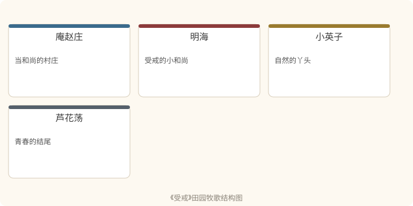

受戒
一、基本信息
| 作者 | 汪曾祺 |
|---|---|
| 成书/出版 | 1980年《北京文学》第10期发表（光明网 C013：'1980年第10期的《北京文学》杂志发表了短篇小说《受戒》，这一年，它的作者汪曾祺刚好60岁'） 满怀敬意地开掘出普通人的美（《受戒》与汪曾祺·光明网）（官方媒体） |
| 国别/地区 | 中国 |
| 时代 | 现当代 · 当代 |
| 体裁 | 短篇小说 |
| 语言 | 汉语（白话） |

《受戒》田园牧歌结构图（主题·结构图）
二、创作背景
光明网（C013）：发表时编辑李清泉称'发表它是要胆量的'；获《北京文学》1980年优秀短篇小说奖。
文学史定位（C013）：'在新时期文学中较早地体现出对于人情美、人性美的追求'。
三、内容脉络
小和尚明海去庵赵庄'当和尚'，与少女小英子的青梅竹马（人物名与情节为通说待核）。
结尾：芦花荡里的小船——田园牧歌式的青春（通说待核）。
四、主要人物表
| 人物 | 身份 | 说明 |
|---|---|---|
| 明海（小明子） | 小和尚 | 受戒者（通说待核） |
| 小英子 | 农家女 | 自然人性的化身（通说待核） |
五、主题与艺术特点
- 人情美与人性美：'对新时期小说的一次彻底的逆反和颠倒'（C013 转述批评界）。
- 和尚也能恋爱——宗教规约与自然天性的和解（通说）。
- 风俗画：高邮水乡（C013：姐弟俩畅谈高邮往事）。
六、影响与评论
- 光明网：'真正使新时期小说步入新的历史门槛的，应该是手里擎着《受戒》的汪曾祺'（马风评语，C013）。
满怀敬意地开掘出普通人的美（《受戒》与汪曾祺·光明网）（官方媒体） - 中国作家网：'随后兴起的寻根浪潮、先锋小说、地域写作，似乎都能从汪曾祺那里寻到源头'（C013）；1995年劳特里奇版《二十世纪中国短篇小说》选入《受戒》（C014）。
汪曾祺：'人间送小温'（中国作家网）（官方文学机构）
七、阅读建议
难点
- 散文化小说——没有情节高潮。
- 1980年语境：对'政治挂帅'文学的反叛（C013）。
- 《汪曾祺全集》（人民文学出版社/北京师范大学出版社，通说待核）。
与《边城》对读：师承沈从文的两种田园。
八、待核实
- 明海/小英子人名与庵赵庄地名核对。
- 结尾芦花荡原文核对。
- 1980年10月《北京文学》'小说专号'细节（C013 已载）核对。
本页主要来源
汪曾祺的其他收录作品：受戒